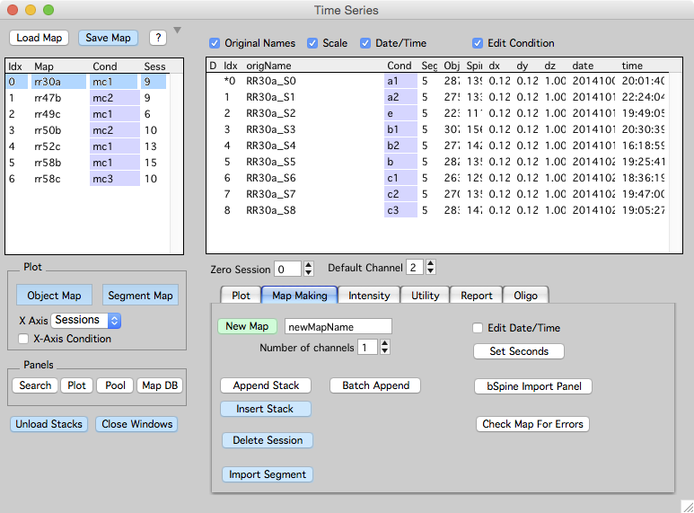
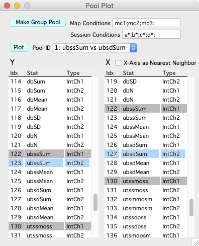
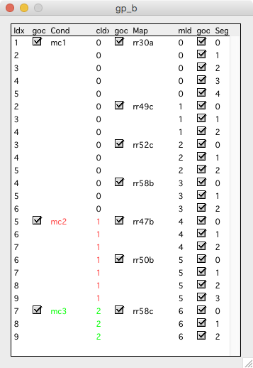
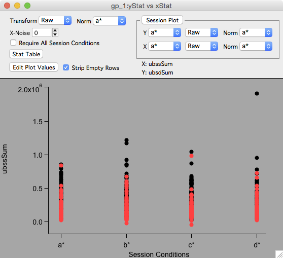
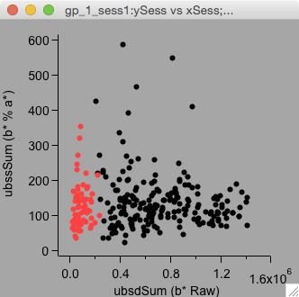
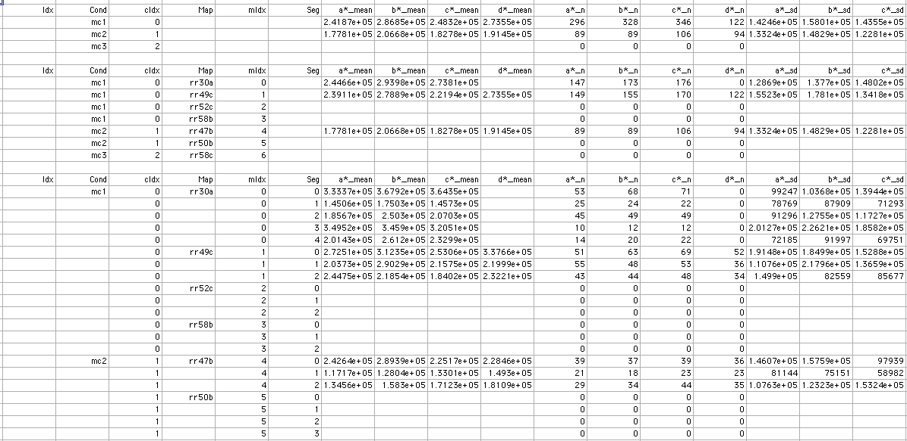

Map Pool
A map pool will plot multiple maps in the same plot and generate pooled statistics across these maps. The maps that go into a pool are specified by their ‘map condition’. In a normal map plot, the X-axis is often session or days. In a pooled plot, the X-axis is defined by each sessions ‘session condition’.
A powerful additional feature is that individual spine values can be grouped (by their average) across multiple sessions in a map.
Recipe to create a map pool
- Specify ‘map conditions’ and ‘session conditions’ by turning on the ‘Edit Conditions’ checkbox in main time-series window.
- Open the pool plot panel from the main time-series window, ‘Pool’ button.
- In the pool plot panel, specify a list of ‘map conditions’ and ‘session conditions’. Make sure the lists use ‘;’ as a separator.
- In the pool plot panel, select a Y and X statistic to go into the pool.
- In the pool plot panel, press ‘Make Group Pool’ to open a database window and a group plot window window.
Note: The wildcard * character can be used when specifying ‘session conditions’. For example, if a few session are control sessions and they are labelled ‘c1’, ‘c2’, ‘c3’, creating a pool using c*; will average all CONNECTED spines across sessions c1/c2/c3 into a single group named c*.

Pool Plot Panel
-
The maps and sessions that go into a pool are defined by the specified ‘map conditions’ and ‘session conditions’. If these map and session conditions are kept the same, a number of group plots with different x/y stats can be created (with ‘make group pool’) and they will all share the same Pool Database Window.
-
Each of these group plots can be returned to by selecting a plot in the ‘Pool ID’ popup and pressing the ‘Plot’ button.
-
Note: Grouped plots visualize the Y-stat versus ‘session conditions’ groups. The X-stat is used later to make Grouped Session Plot(s).

Pool Database Window
- Selecting a ‘Cond’, ‘Map’, or ‘Seg’ in the database window will select the corresponding object in all opened Group Plot Window and Grouped Session Plot windows.
- Individual conditions, maps, and segments can be turned on and off using the checkboxes. When this is done, the object is removed from the group plot window and does not contribute to statistics generated by the ‘stat table’ button.
- Each map condition gets a color. The color is shown by coloring the text for the condition in the pool database window and coloring the markers in the group plot window

Group Plot Window.
- The x-axis is the session conditions that went into the pool, we call these groups.
- The y-axis is the Y-stat that went into the pool.
- The marker colors indicate different map conditions.
- Important: If the group plot was made using the wildcard * for session conditions (something like c*;), the individual markers in this plot are the AVERAGE of all connected spines within this session group.
- Transform the Y-axis with ‘Transform’ popup. Transformations like % are normalized to the session condition group specified in the ‘Norm’ popup.
- Make grouped session plot(s) using the ‘Session Plot’ button. This is where the original X-stat is finally used.
- The ‘Stat Table’ button will generate a Grouped Plot Stat Table. The stats will always be derived from what is currently displayed in the plot. If the Y-Axis has been transformed to %, the stat table will contain mean/sd/se/n for %.
- The ‘Edit Plot Values’ button wil generate a table with all the raw values currently displayed in the group plot window.

Grouped Session Plot
- Create a grouped session plot using the ‘session plot’ button in the group plot window.
- Selecting an object in the grouped session plot will select the corresponding object in the group plot window and vice versa.
- Keyboard ‘e’ will open a table of values displayed in the grouped session plot.
For example, this is a Grouped Session Plot of: Y: b* % a* versus X: b* Raw. As always, the marker colors are indicating the map conditions.

Grouped Plot Stat Table
The grouped plot stat table shows statistics (mean/sd/se/n) for the values currently displayed in the Group Plot Window. The stats are fairly thourough and are broken into three blocks, the first block is mean/sd/se/n for map condition, the second block is for session condition, and the third is per segment.
